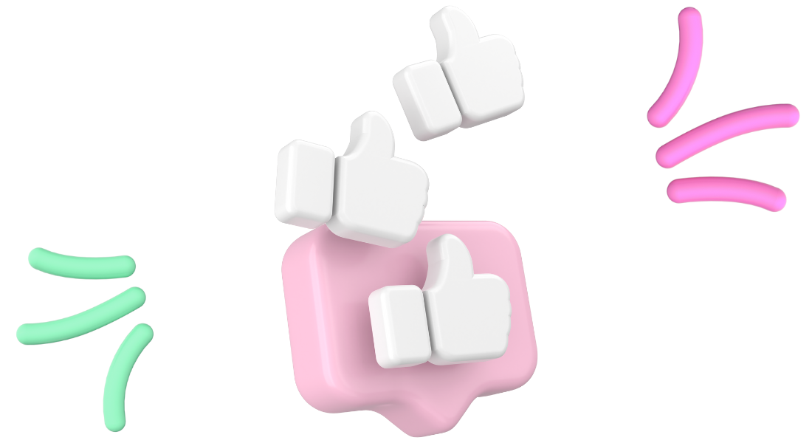

팩
트
체
크
소화가 안 될 때는 어떤 방법을 사용하시나요?
손을 따는 방법도 있고,
무작정 뛰는 방법도 있고,
약을 먹는 방법도 있을 텐데요.
손을 따는 것이 무섭거나 마땅히 약을 구할 때가 없을 때는
이런 방법을 사용해 보세요!

여러분은 탄산음료를 좋아하시나요?
소화가 안 될 때는 탄산음료를 한 잔 마셔 보세요!
체한 것이 내려가는 기분을 느끼실 수 있을 겁니다.
이 특유의 청량감을 위해 탄산음료를 마시지만
한 가지 걸리는 점이 있다면 설탕이겠죠.
제로 칼로리 제품들이 쏟아져 나오는 요즘이지만
탄산수를 추천합니다.
탄산수 중에서도 제가 추천하는 제품은 강력 탄산수예요.
이제부터 감미료가 전혀 들어가지 않은 순수한 탄산음료,
강력 탄산수와 함께라면 소화가 안 되는 일은 없을 거예요.
게시글 작성자가 신뢰할 만한 사람인가요? 정보의 생산자가 전달한 정보의 전문 지식을 가지고 있는 사람인지 확인해 보세요.
관심을 끌기 위한 자극적인 제목의 게시글일 수 있습니다.
정확하지 않은 정보를 다른 사람에게 공유하는 것은 속설의 확산을 가속합니다.
전문 기관에서 작성되지 않은 글을 읽을 때는 전달하는 정보가 과학적으로 검증 과정을 거친 사실인지 확인하고, 원인과 결과의 연관관계를 확인해 보아야 합니다.
해당 게시글은 특정 제품 홍보를 위해 작성된 광고성 게시물입니다.
해당 게시글은 과학적으로 검증되지 않은 미신을 실제 사실인 것처럼 작성한 것입니다.
다른 사람들에게 정보를 전달하기 전에는 주의를 기울여 확인하는 습관을 들여야 합니다.